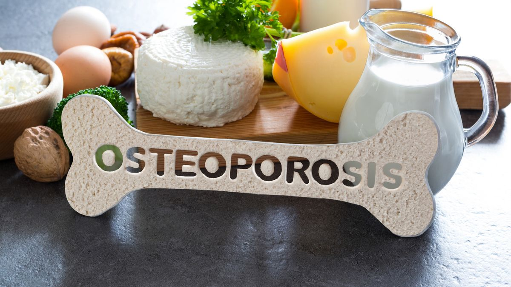

Osteoporosis in Women: Why Are They More at Risk?
Osteoporosis is often called a "silent disease." It develops when bone is lost faster than it's replaced, leaving bone thin, porous, and fragile — usually without any warning, until a fall or even a minor knock causes a fracture. Women are affected far more often than men.
Why women are more prone to it
- Smaller, thinner bones to begin with, meaning less bone mass in reserve
- The drop in estrogen after menopause, which speeds up bone loss significantly in the first 5–10 years
- Longer life expectancy, giving more time for bone density to decline
- Pregnancy and breastfeeding, which draw on the body's calcium stores
Why screening matters
Most women feel nothing until a fracture happens. Possible clues include loss of height, a stooped posture, back pain from a spinal fracture, or a bone breaking more easily than expected. Because symptoms usually appear late, a bone density scan (DEXA) is generally recommended for all women 65 and older, and for younger postmenopausal women with risk factors such as family history, low body weight, smoking, or early menopause.
Protecting your bones
Adequate calcium and vitamin D, weight-bearing exercise like walking or dancing, avoiding smoking, and limiting alcohol all help slow bone loss. Fall-proofing the home — good lighting, no loose rugs, handrails where needed — reduces fracture risk directly. When bone density is already low, several effective medications can slow bone loss or help rebuild bone; your doctor can advise what's appropriate for you.
Concerned about your bone health or have a family history of osteoporosis? Message directly and ask.
Message on WhatsAppThis article is general health information and does not replace a medical consultation. In a medical emergency, call SAMU (114) or go to your nearest hospital.